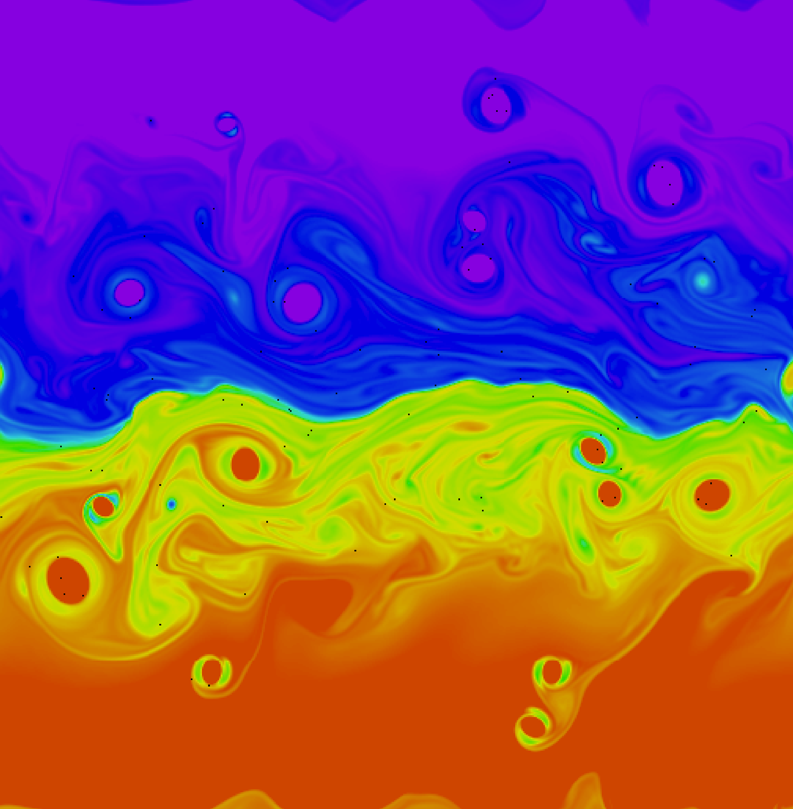

class: center, middle <br/><br/><br/><br/> .title[Liminal] .subtitle[A theme for scientific presentations using Remark.js] <br/><br/> .author[Jonathan Lilly] .institution[Theiss Research, La Jolla, California] <br/><br/> .date[December 21, 2019] <br/><br/> .note[Created with [{Liminal}](https://github.com/jonathanlilly/liminal) using [{Remark.js}](http://remarkjs.com/) + [{Markdown}](https://github.com/adam-p/markdown-here/wiki/Markdown-Cheatsheet) + [{KaTeX}](https://katex.org)] --- name: toc class: left #Table of Contents 1. [What is Liminal?](#whatisliminal) 1. [How it Works](#howitworks) 1. [Liminal Features](#liminalfeatures) 1. [Layout and Styling](#styling) 1. [A Sample Figure](#samplefigure) 1. [A Sample Animation](#sampleanimation) 1. [Two Column Layout](#twocolumn) 1. [The Navigation Compass](#navigation) 1. [Equations](#equations) 1. [Known Issues](#issues) 1. [Liminal Contents](#contents) 1. [License](#license) 1. [Why Not MathJax?](#whynotmathjax) <!-- Comment out the next slide if you don't want the Table of Contents link --> --- layout: true .toc[[✧](#toc)] --- name: whatisliminal class: left #What is Liminal? Liminal is a framework for writing scientific presentations in a very simple and efficient way, including such features as incremental slides, figures, animations, and equations. -- It is a minor extension of a remarkable project called [{Remark.js}](http://remarkjs.com/) written by Ole Petter Bang. -- Liminal presentations are viewed through a web browser, but have the look and feel of a powerpoint presentation. -- These presentations are self-contained, so that they can be viewed offline. Because relatively few supporting files (about 1.5 Mb) are required, they are readily portable. -- Experience shows the display of the presentations to be nearly identical across different browsers and different operating systems. -- It is also easy to customize the presentation style to your liking by editing the CSS header. --- name: howitworks class: left #How it Works [{Remark.js}](http://remarkjs.com/) is a Javascript interpreter for the Markdown language that is intended for presentations. [{Markdown}](https://github.com/adam-p/markdown-here/wiki/Markdown-Cheatsheet), if you're not familiar with it, is a very simple markup language, much easier than writing in LaTeX or HTML. Remark.js lets you write a presentation in Markdown, and have it rendered live by a browser, with no compilation needed. You can then give a presentation directly from your browser that looks like a powerpoint presentation. Liminal modifies Remark.js to be suitable for scientific presentations with the possiblity of lots of equations. It is mostly just CSS styling, together with an integration with the [{KaTeX}](https://katex.org) interpreter for converting LaTeX to HTML. This is why I refer to it Liminal as simply a “theme” for Remark.js. --- name: liminalfeatures class: left #Liminal Features Remark.js has some great features as described in the [{Introductory Slideshow}](https://remarkjs.com) and also the [{Wiki}](https://github.com/gnab/remark/wiki). You should definitely read these, especially the part of the Wiki on [{Markdown}](https://github.com/gnab/remark/wiki/Markdown). Also don't miss these neat [{keyboard shortcuts}](https://github.com/gnab/remark/wiki/Keyboard-shortcuts). Liminal adds the following features to Remark.js. * A particular choice of slide layout and styling * A subtle fade in/out transition between slides * Markup for a title slide, for footnotes$^1$.footnote[$1.$ Here is a footnote, located at the bottom of the page as the name suggests.], and for citations <br/> .cite[See for example Moriarty (1888) and Adler, Holmes, and Watson (1891)] * A compass at the bottom left that links to the table of contents * Markup for a two-column format * Perhaps most importantly, portable equations using KaTeX * A directory structure to keep things organized We'll now take a look at some of these features in more detail. --- name: styling class: left #Layout and Styling The Liminal font choices reflect the fact that I prefer to have really big sentences so that the slides are readily visible from a distance. Moreover, the text is monochromatic, apart from for the references, to show off your colorful figures. At some point I got tired of using color or underlining to represent HTML links, and felt this was distracting from the content. So I started represented links using a grayscale and then enclosing the links in curly brackes, such as this one to my [{home page}](http://www.jmlilly.net). They do change color on mouseover however. The styling can be changed very easily by editing the ⟨style⟩ section of the HTML header. We'll look now at how figures are included in a presentation, before moving on to more Liminal features. --- name: samplefigure class: center #A Sample Figure  Here is a figure, together with a caption that describes it. --- class: left ##Code For The Sample Figure Including figures is done through the HTML “img” tag. The code for the previous slide illustrates some Remark.js basics: ```haml --- name: samplefigure class: center #A Sample Figure Here is a figure, together with a caption that describes it. ``` The three hyphens, “---”, start a new slide. The hyphens must contain **nothing else** on their line, including no leading or trailing spaces, and should be preceded by a blank line. The “name” line specifies an ID that we can link to from the Table of Contents or elsewhere. The “class” line specifies that this slide will be center justified. Finally the “\#” specifies an H1-class header. The title of the current slide begins with \#\#, specifying an H2-class header that is rendered in a smaller font. --- name: sampleanimation class: center #A Sample Animation -- <video preload="auto" width="60%" height="auto" data-setup="{}" autoplay loop controls><source src="./videos/vortexmovie.mp4" type="video/mp4" /></video> -- Embedding animations is straightforward as well. --- class: left ##Code For The Animation Including animations is done using the HTML “video” tag. ```haml --- name: sampleanimation class: center #What About Animations? -- <video preload="auto" width="60%" height="auto" data-setup="{}" autoplay loop controls> <source src="./videos/vortexmovie.mp4" type="video/mp4" /></video> -- Embedding animations is straightforward as well. ``` To delay the presentation of an item and create an incremental slide, as we did on the previous slide, put a line containing **only** two hyphens ('--') followed by an empty line. White spaces before or after the hyphens will cause them to be displayed rather than interpreted as markup. --- name: twocolumn class: left # Two Column Layout .left-column[Some people really like a two-column layout, for example, to have text on one side and a figure on the other.<br/><br/> This can be done in Liminal using the “left-column” and “right-column” classes. <br/><br/> This slide is created as shown at the bottom of the page. Note the blank line in between the two classes.] .right-column[] <br/><br/><br/><br/><br/><br/><br/><br/><br/><br/><br/><br/><br/><br/> ```haml .left-column[Some people really like a two-column layout...] .right-column[] ``` --- class: left # Two Column Layout .left-column[] .right-column[Just a demonstration that the two-column layout works with the figure on the left and the text on the right.] <br/><br/><br/><br/><br/><br/><br/><br/><br/><br/><br/><br/><br/><br/> ```haml .left-column[] .right-column[Just a demonstration that the two-column layout works...] ``` --- name: navigation class: left #The Navigation Compass You have probably noticed that in the lower left-hand corner of all slides after the Table of Contents, there appears a small compass. If you click on it, it will take you back to the Table of Contents. The nagivation compass is created by including an invisible layout slide just after the Table of Contents, which reads ```remark layout: true .toc[[✧](#toc)] ``` where “&\#10023;” is the HTML code for the compass symbol, ✧. This uses the [{layout}](https://github.com/gnab/remark/wiki/Markdown#layout) property of Remark.js. The \.toc is a Remark.js [{content class}](https://github.com/gnab/remark/wiki/Markdown#content-classes) enclosing a link in [{Markdown}](https://github.com/adam-p/markdown-here/wiki/Markdown-Cheatsheet#links) format. In multi-file presentations, the compass can take you to an overall index by replacing “#toc” with e.g. “index.html#toc”. --- name: equations class: left # Equations in Liminal As convenient as Remark.js is, equations pose a bit of a challenge. This is especially the case if you, or someone else, wants to view the presentation offline, when you can't access online libraries. After some tinkering with the [{MathJax}](https://www.mathjax.org) library, I ended up using [{KaTeX}](https://katex.org) to render equations, for reasons to be described later. Liminal includes a complete working distribution of the KaTeX library so your presentation will render equations correctly whether you are online or offline. It is only about 1.5 Mb and therefore easy to distribute. --- class: left # Equations in Liminal With the KaTeX library, you can use LaTeX code to write inline equations such as $E=mc^2$, or full-line equations like <div>\[\Gamma(t)= \pi \, \Im\left\{ \mathbf{x}_+^H(t) \, \frac{\mathrm{d}}{\mathrm{d} t}\mathbf{x}_+(t)\right\}.\]</div> Inline equations are enclosed in single dollar signs, while full-line equations are enclosed in double dollar signs surrounded by a div, ```haml ... inline equations such as $E=mc^2$, or full-line equations like <div>$$\Gamma ... $$</div> ``` where the div begins on a newline, has only white space after it on its line, and is followed by a blank line. You can also use \\( to start an inline equation and \\[ to start a full-line equation, and \\) and \\] to close them. --- name: issues class: left # Known Issues A known issue with Remark.js is that it incorrectly parses inline mathematical equations containing more than one underscore, each of which is followed by a quantity in curly braces. For example: $\int\_{-\infty}^\infty e^{-i \omega \tau} R\_{zz}(\tau) \, d\tau= S\_{zz}(\omega)$. The correct LaTeX code, displayed below, does not render. ```haml $\int_{-\infty}^\infty e^{-i \omega \tau} R_{zz}(\tau) \, d\tau= S_{zz}(\omega)$ ``` The workaround is to escape the underscore characters in such an expression by preceding them by a backslash. ```haml $\int\_{-\infty}^\infty e^{-i \omega \tau} R\_{zz}(\tau) \, d\tau= S\_{zz}(\omega)$ ``` This is a known bug and will hopefully be addressed in future Remark.js releases. --- name: contents class: left # Liminal Contents The Liminal distribution includes this file, *index.html*, as well as *template.html* which is a bare template. There are then four subdirectories. 1. **figures** is for you to put your figures in. 1. **movies** is for you to put your animations in. 1. **javascript** contains the Remark.js and KaTeX javascript files. 1. **stylesheets** contains the CSS file for KaTeX, a subdirectory **fonts** from the KaTeX distribution, and finally *liminal.css* which has some styling you are less likely to want to change. The minimized Remark.js file is available [{here}](https://remarkjs.com/downloads/remark-latest.min.js) while the KaTeX distribution can be downloaded from [{here}](https://github.com/KaTeX/KaTeX/releases). KaTeX is then limited to only the relevant files following [{these instructions}](https://katex.org/docs/browser.html). If you remove the sample files from **figures** and **movies**, the size of the Liminal distribution is only about 2 Mb. --- name: license class: left # License Liminal, like Remark.js and KaTeX, is open-source software licensed under the [{MIT license}](LICENSE.txt). The file *remark.min.js* is copyright © Ole Petter Bang. Components from KaTeX are copyright © Khan Academy and other contributors. The remaining files — *index.html*, *about.html*, *call-javascript.js*, and *liminal.css* — are copyright © Jonathan M. Lilly. --- name: whynotmathjax class: left # Why Not MathJax? It is worth saying some words about how I ended up using KaTeX rather than the more well known [{MathJax}](https://www.mathjax.org) library. Until Version 3 of MathJax, the main distribution was about 100 Mb and included tens of thousands of files. I did not find an obvious way to make the distribution smaller. Thus, if you wanted to view a presentation offline, you had to include this entire distribution with the presentation. That is obviously unweidly and not very portable. As of MathJax 3, the distribution size is now only 22 Mb, in part due to the source code no longer being included. Furthermore there are [{instructions}](https://github.com/mathjax/MathJax#reducing-the-size-of-the-components-directory) for reducing it down to 1.5 Mb for our LaTeX-to-HTML case. This solves the portability problem. --- class: left # Why Not MathJax? <!--A minor annoying feature of the default MathJax behavior is that the equation rendering will change as the page is being loaded, leading to the equations jumping around. This ugly behavior is avoided by calling MathJax with “defer” rather than “async”.--> However, even after sorting out this issue, I still ran into another problem. MathJax 3 has a habit of obscuring parts of my equations on a fairly regular basis when using Safari, my browser of choice. I didn't see these problems in other browsers but couldn't sort out what was causing it. Because of this, I decided to go with KaTeX, which looks fine on Safari, Firefox, and Chrome. In addition, KaTeX renders much faster than MathJax, which is a benefit for long presentations with lots of equations. --- class: middle, center # That's All! [{Download}](https://github.com/jonathanlilly/liminal/archive/master.zip) Liminal from the GitHub [{project page}](https://github.com/jonathanlilly/liminal). Have fun! [{www.jmlilly.net}](http://www.jmlilly.net/index.html)